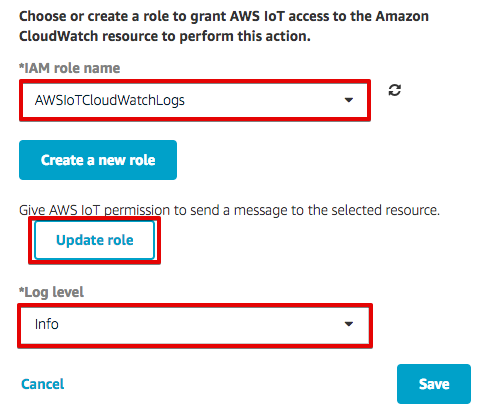
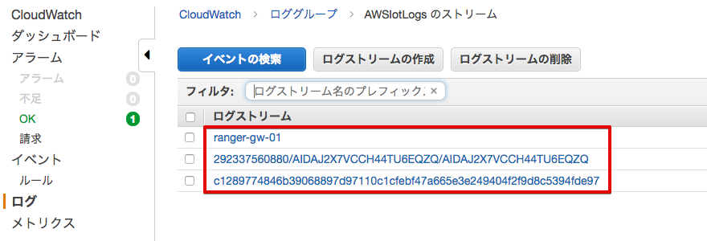

8. その他の設定（オプション）¶
8.1. CloudWatch Logsの設定¶
AWS IoTのログはCloudWatch Logsで取得可能です。トラブルシューティングなどに使用する事ができます。
マネージメントコンソールのAWS IoTを開き、[Settings]を選択し、[Update]をクリックします。

次に[Create a new role]をクリックしてください。

次に”IAM role name”欄に、”AWSIoTCloudWatchLog”と入力し、[Create a new role]をクリックします。

再度”IAM role name”欄から、”AWSIoTCloudWatchLog”を選択し、[Update role]をクリックします。 “Successfully...”と表示されるので、”Log level”で”info”を選択し、[Save]をクリックします。
ログを確認するには、マネージメントコンソールのサービスメニューから[CloudWatch]をクリックして開き、左側のメニューの[ログ]を選択します。ロググループ一覧に”AWSIotLogs”が表示されていることを確認し、クリックします。

ログストリーム一覧にエントリが存在することを確認します。ログストリームの名前をクリックすることで、ログを閲覧することができます。ログストリーム[ranger-gw-<参加者番号>]はデバイス(Thing)に関するログ、長い英数字のログストリームはルール実行に関するログ、短い英数字のログストリームはMQTTに関するログです。
8.2. 他のセンサーの紹介¶
レンジャーシステムズのセンサーの紹介です。
8.2.1. マグネットセンサー(iBS01H)¶

- 磁力を検知
- 扉の開閉による部屋などの使用状況管理が可能
- 電池寿命 2.5年(default setting)
- 送信間隔 10秒毎（または、センサーの状態が変わった瞬間）

8.2.3. 加速度センサー(iBS01RG)¶

- 動き・振動、重力、衝撃を検知
- 産業機器の未然予防などが可能
- モノが動いたことを検知（3軸）
- モノの動きをリアルタイムで検知（3軸）
- 電池寿命 2年（default setting）
- 検出 3軸（X/Y/Z）
- 送信間隔 10秒毎（または、センサーの状態が変わった瞬間）